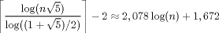

Euclide : le plus viel algorithme du monde ?
Plus vieil algorithme du monde, peut-être pas, mais certainement le plus vieil algorithme qui soit encore d'actualité. On utilise surtout la version étendue , c'est-à-dire fournissant également une relation de Bézout, qui est l'objet vraiment intéressant. Le programme euclide.c présente une version complète de cet algorithme, telle que présentée à la section I.5 du cours, et culmine avec la résolution des équations diophantiennes linéaires ax + by = c.
Il n'y a rien de compliqué dans le code ; assurez-vous que vous
comprenez bien la fonction euclide_complet(), c'est elle qui
fait tout le travail. Au passage, vérifiez que vous êtes capables d'énoncer
correctement la méthode de résolution de ax + by = c, en
comparant avec resoudre().
Un peu complexité
Une des raisons qui justifient que l'algorithme d'Euclide soit encore d'actualité est sa faible complexité, qui est en fait presque optimale. Étendons-nous un peu sur les lignes 5 à 8 du code.
On dit que la complexité de l'algorithme d'Euclide est linéaire, car le nombre d'itérations (c'est-à-dire, à peu de choses près, le nombre d'opérations) nécessaires pour calculer PGCD(a, b) est de l'ordre de log(n), où n = max(a, b). En effet, log(n) représente la taille de l'entrée (en nombre de bits, par exemple).
On peut être plus précis et montrer que le nombre d'itérations est au plus :

Pour comprendre la présence du « nombre d'or » dans cette formule, on peut remarquer que le pire cas pour cet algorithme survient quand on on calcule le PGCD de deux termes consécutifs de la suite de Fibonacci. Or on sait que le « nombre d'or » est relié à cette suite, par exemple par le fait qu'il est la limite du rapport de deux termes consécutifs.
Exercice : Montrer par récurrence que, pour n > 2, le nombre d'itérations dans l'algorithme d'Euclide pour le calcul de PGCD(Fn+1, Fn) est exactement n-1. Comprendre pourquoi c'est le pire cas, et montrer au passage que le PGCD en question vaut 1.
Divisions euclidiennes
La discussion précédente fournit une transition idéale vers les lignes 10
à 19 du code. La fonction div_centre() est une version « à
reste centré » de la division euclidienne. Celle-ci provoque, au plus,
et en moyenne, moins d'itérations dans l'algorithme d'Euclide que la version
usuelle non centrée. La raison en est simple : à chaque itération, la
valeur absolue du reste décroît plus rapidement, et arrive donc plus tôt à
zéro.
Exercice : Jouer avec euclide.c, en remplaçant la division usuelle par sa version centrée, et comparer le nombre d'itérations. Tester en particulier le cas de la suite de Fibonacci, en profiter pour vérifier expérimentalement le résultat de l'exercice précédent.
En fait, cette méthode ne représente pas l'optimisation ultime : elle conserve la nécessité d'effectuer une division euclidienne complète à chaque itération, ce qui peut être coûteux sur les grands nombres. Des variantes existent (algorithme de Lehmer, PGCD binaire), qui contournent cette étape. Nous ne parlerons pas ici de ces méthodes, voir les références pour plus de détails.
Références
En plus des liens Wikipédia dispersés dans la page (de qualité inégale, mais souvent valable), et pour aller (beaucoup) plus loin, on peut consulter le volume deux (Seminumerical Algorithms) de la « bible » de l'informatique : The Art of Computer Programming, de Donald E. Knuth.